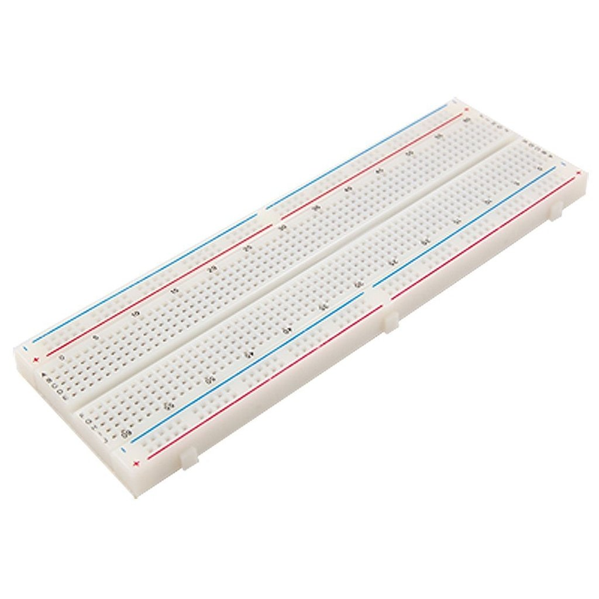
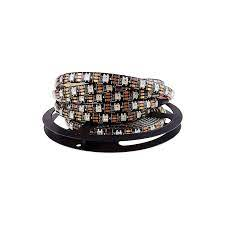

Sobre o Projeto:


Sobre o Projeto:
A EchoLights é uma inovadora árvore de Natal interativa, cercada por LEDs cujas cores podem ser personalizadas. O sistema utiliza um sensor de som programado para detectar palmas, permitindo controlar a árvore de maneira dinâmica. De acordo com a quantidade de palmas, os LEDs executam diferentes comandos.
Materias Usados:
Clique sob as imagens para ver mais detalhes
| Unidades | Material | Imagem |
|---|---|---|
| 1 | Arduino UNO R3 |

|
| 2 | Protoboard |  |
| 15 | Fios de Ligação |

|
| 1 | Sensor de Som |

|
| 1 | Fita LED endereçavel |  |
| 1 | Árvore de Natal |

|
Tutorial da montagem:
Segue abaixo o passo a passo para montagem do projeto.
Sobre o sensor de som:
O sensor KY-038 é fundamental para o funcionamento do projeto.
Logo, precisamos conhecer mais sobre ele.
- A0 Saída analógica.
- G⠀ Alimentação negativa.
- +⠀ Alimentação positiva.
- D0 Saída digital.

Sobre a fita LED:
A fita LED RGB endereçável WS2812B, é outra peça fundamental do nosso sistema, é também a fita mais moderna do mercado atualmente.
Pontos Importantes:
- Como a fita LED é pequena não é necessário fonte 5v externa.
- Cada LED pode ser controlado individualmente.
- Logo abaixo mostraremos o código.